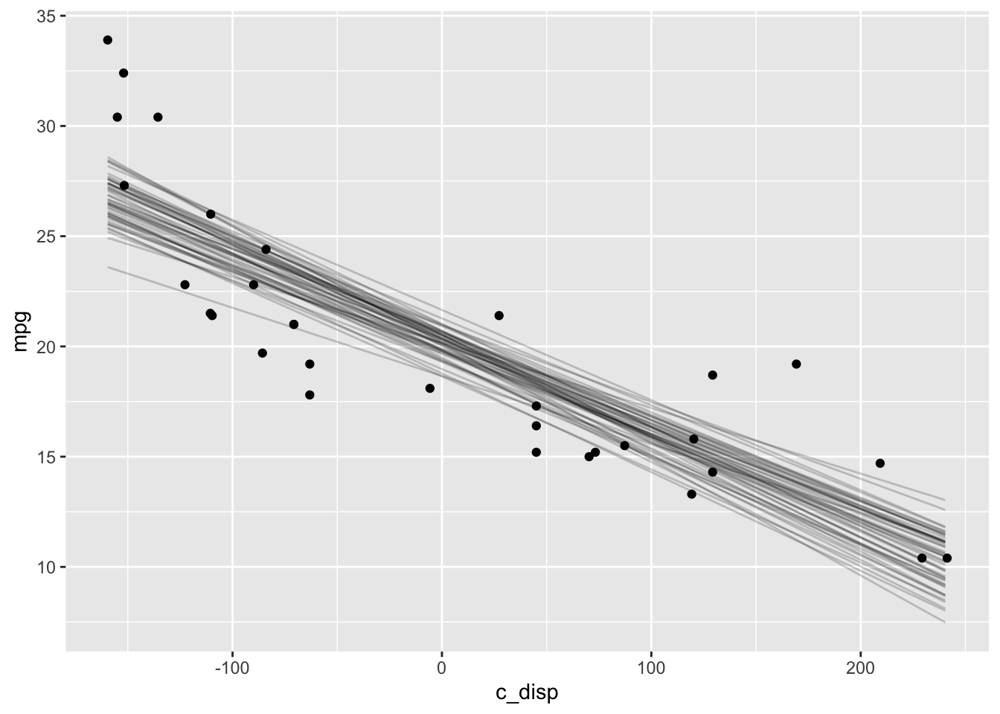
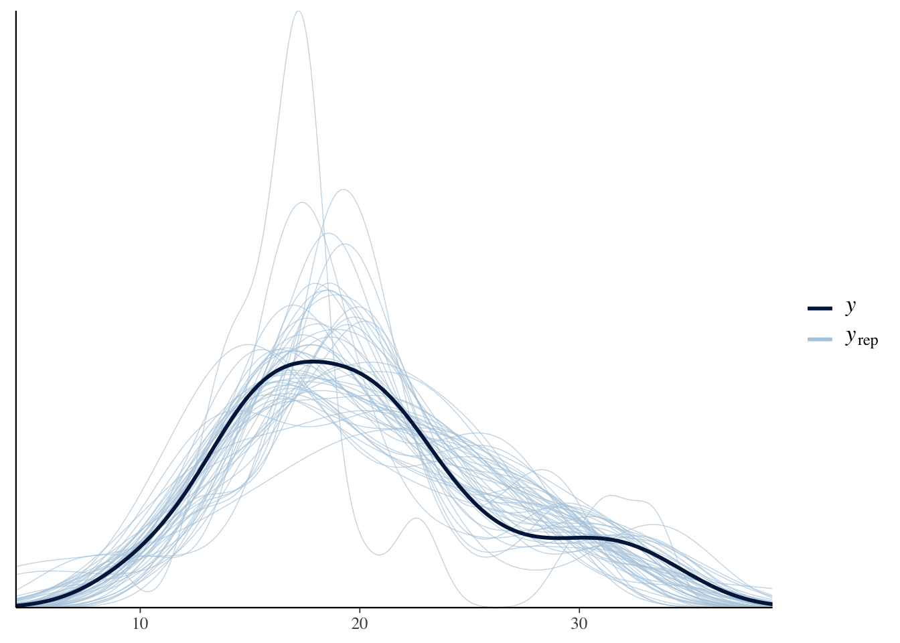

Chapter 4 brms
4.2 Description
For those familiar with the lme4 package, brms is a natural transition because it uses a similar syntax for specifying multi-level models. brms capabilities overlap in some areas with both rstanarm and rethinking while providing expanded features in other areas. For example, brms supports default priors (although not the same weakly informative priors as rstanarm) while also allowing great flexibility for user-defined priors (like rethinking). The brmsfit object is compatible with both the bayesplot and shinystan packages. Like rethinking, there is a method for extracting the automatically generated stan code. These are just a few of the similarities and differences; the overview document linked above includes a table with a complete comparison of the three packages.
4.3 Environment Setup
4.4 Linear Model
4.4.1 Define Model
The brms package default priors are improper flat priors over the real line. However, there is a strong case to be made against this type of non-informative prior.1 So I’ll proceed directly to the priors based on the EPA data.
\[\begin{align*} mpg &\sim Normal(\mu, \sigma^2) \\ \mu &= a + b*disp \\ a &\sim Normal(13.2, 5.3^2) \\ b &\sim Normal(-0.1, 0.05^2) \\ \sigma &\sim Exponential(1) \end{align*}\]
mdl1 <- brm(mpg ~ disp, data=mtcars, family=gaussian(),
prior=c(set_prior("normal(-0.1, 0.05)", class="b", coef = "disp"),
set_prior("normal(13.2, 5.3)", class="Intercept"),
set_prior("exponential(1)", class="sigma")))Like the rethinking package, brms also implements the stancode function. This stan model looks more complicated, but it is functionally equivalent to the rethinking model.
## // generated with brms 2.14.4
## functions {
## }
## data {
## int<lower=1> N; // total number of observations
## vector[N] Y; // response variable
## int<lower=1> K; // number of population-level effects
## matrix[N, K] X; // population-level design matrix
## int prior_only; // should the likelihood be ignored?
## }
## transformed data {
## int Kc = K - 1;
## matrix[N, Kc] Xc; // centered version of X without an intercept
## vector[Kc] means_X; // column means of X before centering
## for (i in 2:K) {
## means_X[i - 1] = mean(X[, i]);
## Xc[, i - 1] = X[, i] - means_X[i - 1];
## }
## }
## parameters {
## vector[Kc] b; // population-level effects
## real Intercept; // temporary intercept for centered predictors
## real<lower=0> sigma; // residual SD
## }
## transformed parameters {
## }
## model {
## // likelihood including all constants
## if (!prior_only) {
## target += normal_id_glm_lpdf(Y | Xc, Intercept, b, sigma);
## }
## // priors including all constants
## target += normal_lpdf(b[1] | -0.1, 0.05);
## target += normal_lpdf(Intercept | 13.2, 5.3);
## target += exponential_lpdf(sigma | 1);
## }
## generated quantities {
## // actual population-level intercept
## real b_Intercept = Intercept - dot_product(means_X, b);
## }4.4.2 Prior Predictive Distribution
There are several methods for getting the prior predictive distribution from the brms model.
The
prior_summaryfunction displays model priors. Manually draw samples from those distributions and then construct the prior predictive distribution as I did in 3.4.2.In the
brmfunction, set the parametersample_prior="yes". Then use the function ’prior_samples` to get samples from the prior distributions and construct the prior predictive distribution.Sample from the model without conditioning on the data. We do that by setting the parameter
sample_prior = "only"and then using thepredictandposterior_epredfunctions to draw samples from the prior only model.
Method 3 is demonstrated below.
D <- seq(min(mtcars$disp), max(mtcars$disp))
mdl1_prior <- update(mdl1, sample_prior="only")
# Summarizes samples from posterior predictive distribution
ppd <- as.data.frame(predict(mdl1_prior, newdata=data.frame(disp=D)))
# Samples from expected value of posterior predictive distribution
eppd <- posterior_epred(mdl1_prior, newdata=data.frame(disp=D),
summary=FALSE, nsamples=50) %>%
t() %>%
as.data.frame() %>%
mutate(disp=D) %>%
pivot_longer(-disp, names_to="iter", values_to="mpg")
ggplot() +
geom_ribbon(data=ppd, mapping=aes(x=D, ymin=Q2.5, ymax=Q97.5), alpha=0.5, fill="lightblue") +
geom_line(data=eppd, mapping=aes(x=disp, y=mpg, group=iter), alpha=0.2) 
4.4.3 Diagnostics

## Family: gaussian
## Links: mu = identity; sigma = identity
## Formula: mpg ~ disp
## Data: mtcars (Number of observations: 32)
## Samples: 4 chains, each with iter = 2000; warmup = 1000; thin = 1;
## total post-warmup samples = 4000
##
## Population-Level Effects:
## Estimate Est.Error l-95% CI u-95% CI Rhat Bulk_ESS Tail_ESS
## Intercept 29.62 1.21 27.20 32.00 1.00 3382 2874
## disp -0.04 0.00 -0.05 -0.03 1.00 3645 2967
##
## Family Specific Parameters:
## Estimate Est.Error l-95% CI u-95% CI Rhat Bulk_ESS Tail_ESS
## sigma 3.22 0.42 2.52 4.16 1.00 2795 2248
##
## Samples were drawn using sampling(NUTS). For each parameter, Bulk_ESS
## and Tail_ESS are effective sample size measures, and Rhat is the potential
## scale reduction factor on split chains (at convergence, Rhat = 1).4.4.4 Posterior Distribution
The simple linear model only has population-level (i.e., “fixed”) effects, and the fixef function extracts a summary of those parameters only. Note that this is the same information as returned from the summary function above.
## Estimate Est.Error Q2.5 Q97.5
## Intercept 29.62222 1.208253 27.20177 32.00096
## disp -0.04165 0.004688 -0.05109 -0.032624.4.5 Posterior Predictive Distribution
The brms package includes the pp_check function which uses bayesplot under the hood.

Or we can use ppc_dens_overly directly with the brmsfit object as shown below.
And below is a plot of the expected value of the posterior predictive distribution overlayed with the observations.
D <- seq(min(mtcars$disp), max(mtcars$disp))
# Samples from expected value of posterior predictive distribution
eppd <- posterior_epred(mdl1, newdata=data.frame(disp=D),
nsamples=50, summary=FALSE) %>%
t() %>%
as.data.frame() %>%
mutate(disp=D) %>%
pivot_longer(-disp, names_to="iter", values_to="mpg")
ggplot() +
geom_line(data=eppd, mapping=aes(x=disp, y=mpg, group=iter), alpha=0.2) +
geom_point(data=mtcars, mapping=aes(x=disp, y=mpg))
4.5 Semi-parametric Model
4.5.1 Define Model
The semi-parametric model is formulated as a mixed-model in brms.2
We can use the get_prior function to check what the default priors are for this mixed model.
## prior class coef group resp dpar nlpar
## (flat) b
## (flat) b sdisp_1
## student_t(3, 19.2, 5.4) Intercept
## student_t(3, 0, 5.4) sds
## student_t(3, 0, 5.4) sds s(disp,bs="cr",k=7)
## student_t(3, 0, 5.4) sigma
## bound source
## default
## (vectorized)
## default
## default
## (vectorized)
## defaultI’ll replace the improper prior for the smoothing parameter fixed effect and leave the rest since they are weakly informative priors. See the set_prior help for details on changing the priors for the other parameters.
4.5.2 Prior Predictive Distribution
4.5.3 Diagnostics
## Family: gaussian
## Links: mu = identity; sigma = identity
## Formula: mpg ~ s(disp, bs = "cr", k = 7)
## Data: mtcars (Number of observations: 32)
## Samples: 4 chains, each with iter = 2000; warmup = 1000; thin = 1;
## total post-warmup samples = 4000
##
## Smooth Terms:
## Estimate Est.Error l-95% CI u-95% CI Rhat Bulk_ESS Tail_ESS
## sds(sdisp_1) 1.50 0.94 0.44 4.01 1.01 858 1504
##
## Population-Level Effects:
## Estimate Est.Error l-95% CI u-95% CI Rhat Bulk_ESS Tail_ESS
## Intercept 20.08 0.44 19.21 20.94 1.00 3371 2727
## sdisp_1 -3.19 0.28 -3.74 -2.63 1.00 2442 2210
##
## Family Specific Parameters:
## Estimate Est.Error l-95% CI u-95% CI Rhat Bulk_ESS Tail_ESS
## sigma 2.40 0.35 1.83 3.19 1.00 2434 2702
##
## Samples were drawn using sampling(NUTS). For each parameter, Bulk_ESS
## and Tail_ESS are effective sample size measures, and Rhat is the potential
## scale reduction factor on split chains (at convergence, Rhat = 1).
4.5.4 Posterior Distribution
The summary
4.6 Session Info
## R version 4.0.3 (2020-10-10)
## Platform: x86_64-apple-darwin17.0 (64-bit)
## Running under: macOS Big Sur 10.16
##
## Matrix products: default
## BLAS: /Library/Frameworks/R.framework/Versions/4.0/Resources/lib/libRblas.dylib
## LAPACK: /Library/Frameworks/R.framework/Versions/4.0/Resources/lib/libRlapack.dylib
##
## locale:
## [1] en_US.UTF-8/en_US.UTF-8/en_US.UTF-8/C/en_US.UTF-8/en_US.UTF-8
##
## attached base packages:
## [1] stats graphics grDevices datasets utils methods base
##
## other attached packages:
## [1] bayesplot_1.7.2 brms_2.14.4 Rcpp_1.0.5 forcats_0.5.0
## [5] stringr_1.4.0 dplyr_1.0.2 purrr_0.3.4 readr_1.4.0
## [9] tidyr_1.1.2 tibble_3.0.4 ggplot2_3.3.2 tidyverse_1.3.0
##
## loaded via a namespace (and not attached):
## [1] minqa_1.2.4 colorspace_2.0-0 ellipsis_0.3.1
## [4] ggridges_0.5.2 rsconnect_0.8.16 markdown_1.1
## [7] base64enc_0.1-3 fs_1.5.0 rstudioapi_0.13
## [10] farver_2.0.3 rstan_2.21.2 DT_0.16
## [13] fansi_0.4.1 mvtnorm_1.1-1 lubridate_1.7.9.2
## [16] xml2_1.3.2 codetools_0.2-16 bridgesampling_1.0-0
## [19] splines_4.0.3 knitr_1.30 shinythemes_1.1.2
## [22] projpred_2.0.2 jsonlite_1.7.1 nloptr_1.2.2.2
## [25] broom_0.7.2 dbplyr_2.0.0 shiny_1.5.0
## [28] compiler_4.0.3 httr_1.4.2 backports_1.2.0
## [31] assertthat_0.2.1 Matrix_1.2-18 fastmap_1.0.1
## [34] cli_2.2.0 later_1.1.0.1 prettyunits_1.1.1
## [37] htmltools_0.5.0 tools_4.0.3 igraph_1.2.6
## [40] coda_0.19-4 gtable_0.3.0 glue_1.4.2
## [43] reshape2_1.4.4 V8_3.4.0 cellranger_1.1.0
## [46] vctrs_0.3.5 nlme_3.1-149 crosstalk_1.1.0.1
## [49] xfun_0.19 ps_1.4.0 lme4_1.1-26
## [52] rvest_0.3.6 mime_0.9 miniUI_0.1.1.1
## [55] lifecycle_0.2.0 renv_0.12.0 gtools_3.8.2
## [58] statmod_1.4.35 MASS_7.3-53 zoo_1.8-8
## [61] scales_1.1.1 colourpicker_1.1.0 hms_0.5.3
## [64] promises_1.1.1 Brobdingnag_1.2-6 parallel_4.0.3
## [67] inline_0.3.17 shinystan_2.5.0 curl_4.3
## [70] gamm4_0.2-6 yaml_2.2.1 gridExtra_2.3
## [73] StanHeaders_2.21.0-6 loo_2.3.1 stringi_1.5.3
## [76] dygraphs_1.1.1.6 pkgbuild_1.1.0 boot_1.3-25
## [79] rlang_0.4.9 pkgconfig_2.0.3 matrixStats_0.57.0
## [82] evaluate_0.14 lattice_0.20-41 labeling_0.4.2
## [85] rstantools_2.1.1 htmlwidgets_1.5.2 processx_3.4.5
## [88] tidyselect_1.1.0 plyr_1.8.6 magrittr_2.0.1
## [91] bookdown_0.21 R6_2.5.0 generics_0.1.0
## [94] DBI_1.1.0 pillar_1.4.7 haven_2.3.1
## [97] withr_2.3.0 mgcv_1.8-33 xts_0.12.1
## [100] abind_1.4-5 modelr_0.1.8 crayon_1.3.4
## [103] rmarkdown_2.5 grid_4.0.3 readxl_1.3.1
## [106] callr_3.5.1 threejs_0.3.3 reprex_0.3.0
## [109] digest_0.6.27 xtable_1.8-4 httpuv_1.5.4
## [112] RcppParallel_5.0.2 stats4_4.0.3 munsell_0.5.0
## [115] shinyjs_2.0.0